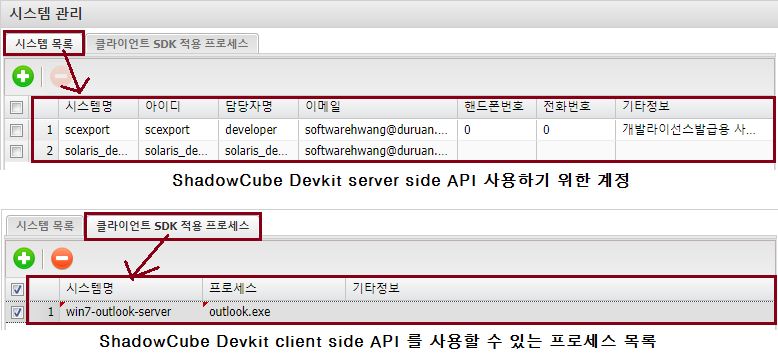
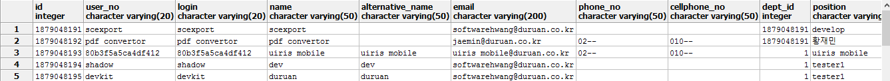
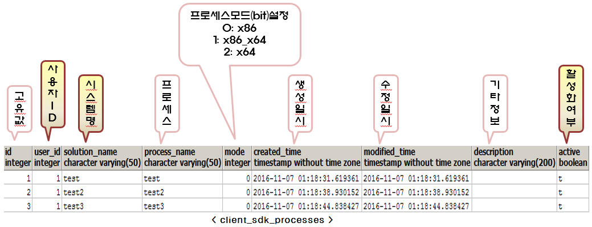

시스템 관리 (users, client_sdk_processes)
시스템 관리는 ShadowCube Devkit API 를 사용하기 위한 시스템 계정을 관리하는 것을 말한다.

시스템 목록
-
ShadowCube Devkit server side API 를 사용하기 위해 시스템 계정을 추가해야 한다.
-
시스템 관리자는 users 테이블에서 id 값이 1879048191 이상인 사용자를 말한다.
SELECT *
FROM users
where id >= 1879048191
출력 결과

클라이언트 SDK 적용 프로세스
-
클라이언트 SDK 는 라이선스 정책 > ShadowCube 속성 > Client SDK 사용 시, 어떤 프로세스에 의해 ShadowCube Devkit API 가 호출되는지 설정하는 페이지이다.

이전